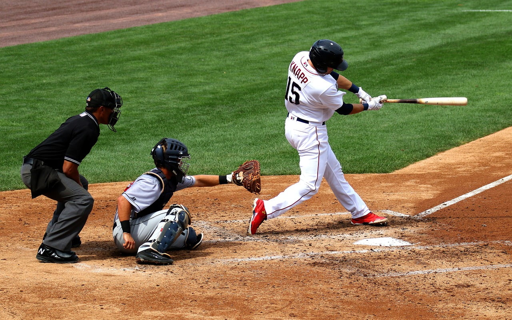
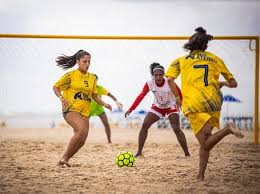
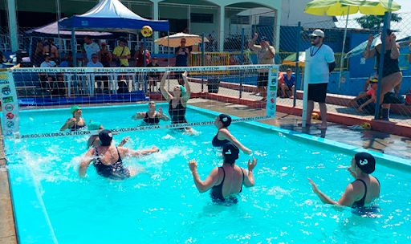
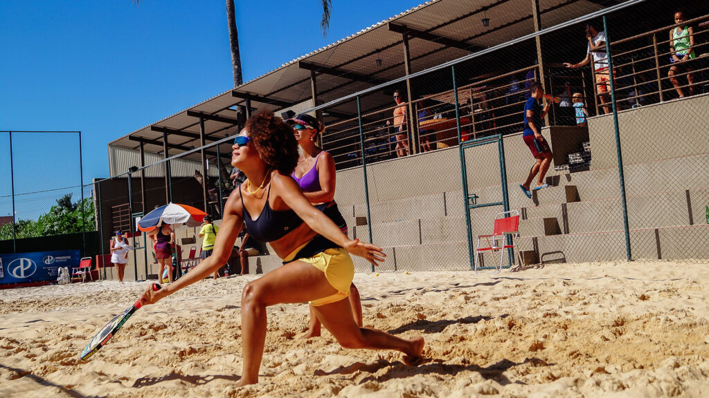

Esportes com Bolas
Tão antigos quanto o homem, os esportes são uma das invenções mais benéficas do homem. Além de manter o corpo saudável, ainda auxiliam na criação de uma série de comportamentos positivos, como a humildade, a união, a empatia, dentre outros.
E os esportes com bola são, sem nenhuma úvida, os mais populares. Mas você sabe a diferença entre alguns deles? É justamente isso que iremos descobrir abaixo.
| Esporte | Origem | Ambiente | Objetivo | Equipe | ||
|---|---|---|---|---|---|---|
| 1 |  |
Baseboll | EUA,1971 | Campo com 1/4 de círculo de 92 a 108,2m de raio. | Realizar o maior número de corridas. | Nove jogadores em cada time. |
| 2 |  |
Beach soccer | 1930,Brasil | Quadra de areia com 35 ou 37m x 26 ou 27m de largura. | Realizar gols no campo adversário. | Cinco jogadores em cada time |
| 3 |  |
Biribol | 1968,Brasil. | Piscina com 4 x 8 x 1,3m | Derrubar a bola na quadra adversária | 2 a 4 jogadores por time. |
| 4 |  |
Frescobol | Brasil 1946. | Ao ar livre. | Manter a bola no ar pelo maior tempo possivel. | Geralmente um contra um. |